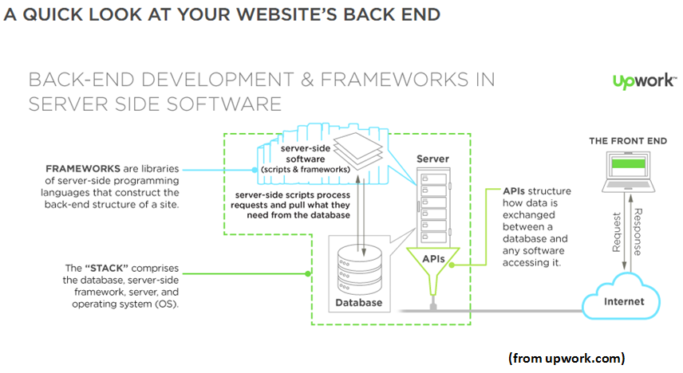

Introduction Server Side Web Scripting
Server-side scripting is a way for the web developers to design a website that can execute and process the users request on the originating server. It provides the user an interface that they can use and also helps to keep control of the script source code by limiting the users access.
Web developers used server-side scripting to create a software that can connects the database to the browser that can give a user-friendly experience to the users. 
Some example of server-side scripting are the following:
- ASP
- C
- Java
- JavaScript(Using Server-side JavaScript (SSJS) like node.js)
- PHP
- Python
- R
- Ruby